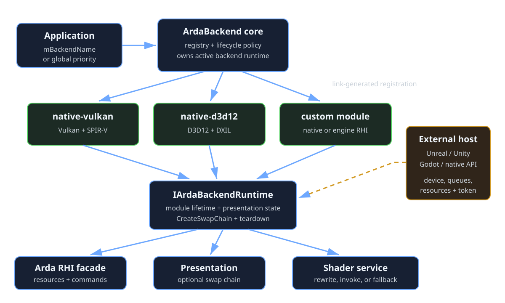

Universal implementation boundary
Backend modules
ArdaBackend is the stable declaration layer used by the rest of Ardashir. A linked backend module supplies the operative device, RHI implementation, presentation path, external-object adoption, and shader compiler integration. The sample modules are nvrhi-vulkan and nvrhi-d3d12; a native Vulkan/D3D12 implementation or an engine RHI adapter follows the same contract.
Learning objectives
After this chapter, you should be able to:
- separate renderer-facing Arda RHI contracts from the provider-facing implementation contract;
- describe a module with a stable identity, compatibility class, device-source support, shader format, and priority;
- implement the module and runtime-device interfaces without exposing native types through Arda's public headers;
- wire a backend library into CMake so static-link elimination cannot discard registration;
- route host-owned devices and resources to exactly one compatible module; and
- preserve module, host-device, queue, resource, and shader-service lifetimes across initialization and shutdown.
Prerequisites
Read Architecture for the opaque RHI and process-lifetime model, then External interop if the host owns the native device. A module implementer should understand intrusive references, queue synchronization, native resource states, and CMake static-library linking.
Mental model: declaration core plus linked implementation
Think of ArdaBackend as two concentric contracts. The outer contract is used by Ardashir systems: configure one backend, obtain an IArdaRHIDevice, create resources, record commands, compile registered shaders, and optionally present. The inner provider contract is used only by linked backend libraries: advertise a module, manufacture its runtime device, and bridge module-specific services.

The distinction between identity and compatibility matters. nvrhi-vulkan and a future unreal-vulkan-rhi could both use the Vulkan compatibility class, but they are not interchangeable implementations and need not accept the same external payload.
Two API audiences
Ardashir/application audience
Application and renderer code uses ArdaBackend.h, ArdaDevice.h, the RHI headers, shader APIs, and optional external-provider APIs. It may select a module by stable name with ConfigureBackend(const char*), or leave mBackendName empty and select the highest-priority module compatible with mBackend.
Backend implementer audience
A backend library includes ArdaBackendProvider.h and implements IArdaBackendModule plus IArdaBackendDevice. Native SDK or engine headers belong in that library. Do not add their types to Source/ArdaBackend/Public; carry them as FArdaNativeObject, stable named objects, or module-owned private state.
This keeps the public binary and include boundary independent of NVRHI, Vulkan, D3D12, Unreal, Unity, and Godot. It also makes an implementation replaceable by changing build options and linked registration functions rather than rewriting Ardashir call sites.
The module descriptor is a compatibility declaration
FArdaBackendModuleDescriptor is copied when the module is registered. Every field participates in selection or validation:
mInterfaceVersion- Must equal
ArdaBackendProviderInterfaceVersion. It guards the C++ virtual contract, not native-driver compatibility. mName- Stable machine key used by configuration and external providers. Treat it as persistent configuration data.
mDisplayName- Human-facing diagnostic label; it need not be stable.
mBackendType- D3D12, Vulkan, or Custom compatibility class used for legacy/API-based selection and shader permutations.
mShaderBinaryFormat,mShaderArtifactExtension, andmShaderCompilerIdentity- State what the module consumes. DXIL and SPIR-V can use core's DXC-compatible fallback. An in-process or BackendDefined compiler supplies a stable identity and an operative module hook.
- Device-source flags
mbSupportsOwnedDeviceandmbSupportsExternalDevicemust truthfully match whatCreateDevicecan construct.mPriority- Breaks ties for compatibility-class selection. Stable-name selection ignores priority.
The checked-in sample publishes separate descriptors for nvrhi-vulkan and nvrhi-d3d12. They may share implementation code, but they are independently registered and independently linkable modules.
The runtime device contract
IArdaBackendModule::CreateDevice returns a unique, initially unconfigured implementation. Core then calls Initialize once with the selected configuration, optional presentation surface, and optional external provider. A successful device must return a valid backend-neutral FArdaRHIDeviceRef, accurate queue capabilities, and an actionable error string after failures.
CreateSwapChain is required by the interface but may return empty when presentation is unsupported or invalid for the chosen device source. WaitForIdle must cover work submitted through the module before teardown. It cannot make host-owned queues safe if the host submits concurrently; cross-owner coordination remains an integration contract.
The core owns the backend-device unique pointer. The returned RHI reference can outlive the global context, so module code and its backing library must remain loaded until all copied RHI references are gone. Unloading an engine plugin while one of its virtual objects or deleters is reachable is undefined behavior.
Registration and selection flow
- Build-generated wiring calls each linked module's registration entry point.
RegisterBackendModulevalidates and copies the descriptor while borrowing the module object.- The application chooses an exact
mBackendName, or leaves it empty and supplies anEArdaBackendTypecompatibility class. - Initialization validates device-source support and external-provider compatibility before asking the module to allocate a device.
- After success,
FArdaDeviceContext::mBackendNamerecords the actual implementation andGetActiveBackendModuleexposes a non-owning diagnostic view.
EnumerateBackendModules returns copied descriptors in stable-name order, suitable for configuration UIs and startup logs. Do not cache raw module pointers across registration changes.
for (const auto& module : arda::backend::EnumerateBackendModules())
{
Log("%s: owned=%d external=%d",
module.mName.c_str(),
module.mbSupportsOwnedDevice,
module.mbSupportsExternalDevice);
}
arda::backend::FArdaBackendConfiguration config;
config.mBackendName = "nvrhi-vulkan"; // Exact implementation identity.
if (!arda::backend::ConfigureBackend(config) ||
!arda::backend::InitializeBackend())
{
Fail(arda::backend::GetBackendError());
}Build and linking decide which modules exist
ArdaBackend is a static library, so merely linking another static archive may not retain an unreferenced registration object. The build therefore generates explicit calls from a list of registration function names. This is link-time registration, not reliance on unspecified global-constructor order.
The sample switches are:
ARDASHIR_BACKEND_NVRHI_VULKANlinksArdashir::ArdaBackendNvrhiVulkanand registersRegisterArdaNvrhiVulkanBackend;ARDASHIR_BACKEND_NVRHI_D3D12does the same forArdashir::ArdaBackendNvrhiD3D12on Windows; andArdashir::ArdaBackendNvrhiCommoncontains shared NVRHI adaptation and is linked by the two sample modules, not selected as a module itself.
A custom module supplies a CMake target and an unqualified registration function in namespace arda::backend. In a parent project, create the target before adding Ardashir so Source/ArdaBackend can resolve it:
# Parent CMakeLists.txt
add_library(MyEngineArdaBackend STATIC
MyEngineArdaBackend.cpp
MyEngineArdaDevice.cpp)
target_include_directories(MyEngineArdaBackend PUBLIC include)
set(ARDASHIR_BACKEND_NVRHI_VULKAN OFF CACHE BOOL "" FORCE)
set(ARDASHIR_BACKEND_NVRHI_D3D12 OFF CACHE BOOL "" FORCE)
set(ARDASHIR_BACKEND_MODULE_TARGETS MyEngineArdaBackend CACHE STRING "" FORCE)
set(ARDASHIR_BACKEND_REGISTRATION_FUNCTIONS
RegisterMyEngineArdaBackend CACHE STRING "" FORCE)
add_subdirectory(path/to/Ardashir)The equivalent cache-oriented configure command is:
cmake -S . -B build-custom \
-DARDASHIR_BACKEND_NVRHI_VULKAN=OFF \
-DARDASHIR_BACKEND_NVRHI_D3D12=OFF \
-DARDASHIR_BACKEND_MODULE_TARGETS=MyEngineArdaBackend \
-DARDASHIR_BACKEND_REGISTRATION_FUNCTIONS=RegisterMyEngineArdaBackendFor multiple values, pass CMake semicolon-separated lists in the same order. The target must already exist before Source/ArdaBackend is configured. The function name is validated as a C++ identifier and must be link-visible to ArdaBackend. If a shared-library/plugin integration needs runtime unload, wrap this static registration scheme with explicit plugin load/unload coordination and refuse unload while active or referenced.
Universal external-device registration
The host registers one IArdaExternalDeviceProvider before initialization and selects ExternalProvider. The preferred generic path fills FArdaExternalDeviceDesc. Explicit fields cover common roles: instance/factory, adapter/physical device, logical device, and typed queues. mAdditionalObjects carries named engine objects; mBackendData carries immutable versioned bytes understood only by the named module.
Use GetBackendName and descriptor mBackendName to prevent a payload from reaching the wrong adapter. For example, an Unreal module might require unreal-rhi and document names such as DynamicRHI and RHIDevice. The names are module ABI: version them, validate required/unknown entries, and never guess object types from mNativeApi.
GetExternalDeviceDesc is the only public device-description path. mAdditionalObjects carries named handles, mProperties carries copied string values with repeated names, and mBackendData carries a versioned binary payload. NVRHI translation types remain private to the sample module.
External resources use the same routing rule
An IArdaExternalResourceProvider resolves stable application IDs into texture or buffer import descriptors. Its optional GetBackendName binds those descriptors to one implementation. Backend-defined native types set EArdaRHINativeResourceType::BackendDefined, a stable mNativeTypeName, and copied mBackendData.
The selected RHI device remains the validation authority. A module must reject unknown type names, malformed payload versions, incompatible devices, false resource descriptions, and unsupported ownership modes. Imported references do not transfer host ownership unless the module's documented native mechanism explicitly does so; the shared lifetime token is the portable way to pin host/plugin state.
Shader compiler invocation is a module service
Core still owns registered shader identity, permutation filtering, cache keys, and artifact publication. ResolveShaderTarget copies the exact module identity, binary format, suffix, and compiler identity into an immutable FArdaShaderTarget. Before compilation core builds FArdaBackendShaderCompileInvocation and offers it to that exact module, independent of whichever device is active.
ConfigureShaderCompileInvocationvalidates or rewrites the executable, profile, and arguments.InvokeShaderCompilermay execute through an engine shader service and return Success or Failure.- NotHandled asks core to use its DXC-compatible process launcher. This is suitable for DXIL/SPIR-V modules after configuration, but a BackendDefined format must provide an operative path.
The module must write only the requested temporary output and return diagnostics as text. Core verifies the final artifact location and performs transactional publication. Do not let engine compiler callbacks mutate backend registration or device lifecycle state.
Ownership, synchronization, and performance
- Module: owned by its library/host; borrowed by the registry; must outlive registration, active device, and every concrete RHI object whose code lives in that library.
- Backend device: uniquely owned by core; owns module-private wrapper state; borrows host objects for external-device mode.
- Descriptors: copied value metadata. Opaque handles remain non-owning unless a documented native retention mechanism or lifetime token says otherwise.
- Queues: the module may submit directly. The host must grant a coordinated interval; registration mutexes do not synchronize GPU queues.
- Registry: registration functions are thread-safe, but callbacks must not reenter registry/lifecycle operations. Serialize configuration, initialization, shutdown, plugin unloading, and device use.
The abstraction adds virtual dispatch at device-service boundaries and descriptor translation during object creation. GPU submission, shader compilation, and pipeline creation dominate those costs. Prefer honest, coarse backend operations; do not leak a native command per virtual call simply to mimic an engine API. Cache translated immutable layouts and states only with device identity and module-specific compatibility in the key.
Platform and engine integration notes
NVRHI Vulkan
Available when its CMake option is enabled. It consumes SPIR-V, can create a Vulkan device, and privately translates the universal external-device descriptor into NVRHI's Vulkan device description. The host must preserve Vulkan instance/device/queue, enabled-feature, extension, allocation-callback, loader, and host-synchronization contracts.
NVRHI D3D12
Available on Windows when enabled. It consumes DXIL, can create a D3D12 device, and privately translates the universal external-device descriptor into NVRHI's D3D12 device description. NVRHI can retain COM references needed by wrappers, but the host still owns device policy and coordinated queue access.
Unreal, Unity, Godot, and other hosts
Prefer adapting the engine's supported RHI/device access surface over reaching through private internals. The module should identify an exact engine/version support range, acquire typed interfaces, convert engine resource/queue/state concepts to Arda contracts, and define where execution occurs relative to the engine render/RHI thread. The current repository provides the extension points, not these engine adapters.
Worked example: minimal custom module
This skeleton shows responsibility placement. Native details intentionally remain in the module library.
namespace arda::backend
{
class FMyDevice final : public IArdaBackendDevice
{
public:
EArdaInitializeResult Initialize(
const FArdaBackendConfiguration& config,
IArdaWindowSurface* surface,
const IArdaExternalDeviceProvider* provider) override;
eastl::unique_ptr<IArdaSwapChain> CreateSwapChain(
uint32_t width, uint32_t height) override;
void WaitForIdle() noexcept override;
rhi::FArdaRHIDeviceRef GetDevice() const noexcept override;
FArdaQueueCapabilities GetQueueCapabilities() const noexcept override;
const eastl::string& GetError() const noexcept override;
private:
// Concrete implementation satisfies the complete IArdaRHIDevice contract.
rhi::FArdaRHIDeviceRef mDevice;
};
class FMyModule final : public IArdaBackendModule
{
public:
const FArdaBackendModuleDescriptor& GetDescriptor() const noexcept override;
eastl::unique_ptr<IArdaBackendDevice> CreateDevice(
EArdaDeviceSource source) override;
rhi::FArdaRHIStatus ConfigureShaderCompileInvocation(
FArdaBackendShaderCompileInvocation& invocation) const override;
};
bool RegisterMyEngineArdaBackend()
{
static FMyModule module; // Library lifetime must cover all uses.
return RegisterBackendModule(module);
}
} // namespace arda::backendConstruction alone performs no GPU work. Initialize validates the exact external schema or creates native state, then constructs a concrete object implementing the full IArdaRHIDevice surface returned by GetDevice. That RHI object validates backend-defined resource type names and payloads in its import methods. Partial failure must release module-owned objects, leave host-owned objects untouched, and retain an error message. Shutdown waits for Arda submissions, releases core-owned objects in dependency order, and only then permits module unregistration or library unload.
Failure analysis
- “Configured backend module is not registered”
- Confirm the library target is in
ARDASHIR_BACKEND_MODULE_TARGETS, its entry point is inARDASHIR_BACKEND_REGISTRATION_FUNCTIONS, and the configured stable name exactly matches the descriptor. - Registration rejects the module
- Check interface version, non-empty unique name, shader format/extension, device-source flags, and collision with another live module object.
- Compatibility selection chooses the wrong implementation
- Set
mBackendNamefor deterministic selection. Otherwise inspect every descriptor's backend type and priority. - External initialization reports a module mismatch
- Align configuration, provider
GetBackendName, descriptormBackendName, and compatibility class. Do not erase the exact module name to bypass schema validation. - External resource import fails
- Check provider module routing, native type name, payload version, device identity, full resource description, initial state, and lifetime token.
- Shader compilation says the backend did not handle its format
- A BackendDefined module returned NotHandled or produced no requested artifact. Implement the invocation hook or select DXIL/SPIR-V with a usable fallback compiler.
- Crash during shutdown or plugin unload
- Search for copied RHI/device/resource references, swap chains, cached pipelines, callbacks, and in-flight host work. Registry removal is not a substitute for quiescence.
Summary and checkpoints
- ArdaBackend core defines stable renderer-facing semantics; linkable modules make them operative.
- A module name identifies an implementation; backend type is only a compatibility class.
- The module/device split separates persistent registration identity from one runtime device instance.
- Build-generated registration makes the linked module set explicit and safe for static archives.
- Generic external-device/resource descriptors are routed and interpreted by the selected module.
- Module lifetime must cover every concrete object and callback implemented by its library.
Checkpoint questions
- Why can two modules share
EArdaBackendType::Vulkanbut require different external payloads? - Which descriptor field rejects a provider compiled against an incompatible virtual interface?
- Why are a linked library and a registration function both required for a static backend module?
- Who owns a module, backend device, generic descriptor bytes, and external native device?
- When should a shader module return NotHandled rather than Success or Failure?
- What must be drained before an engine plugin containing a backend module can unload?